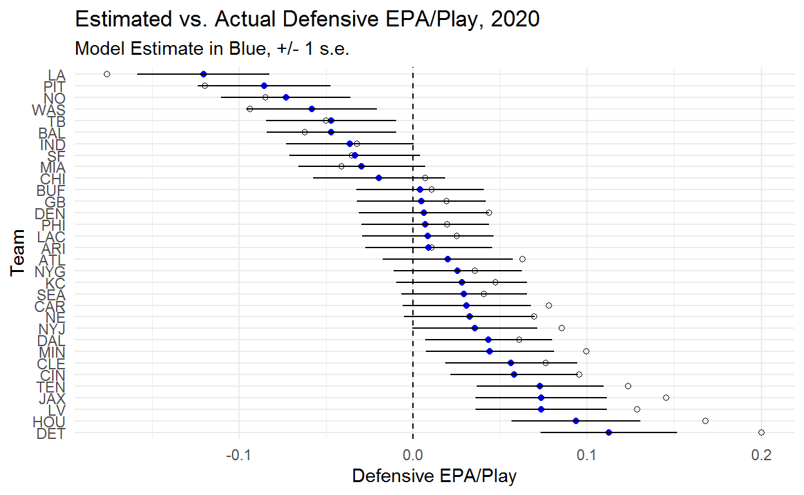
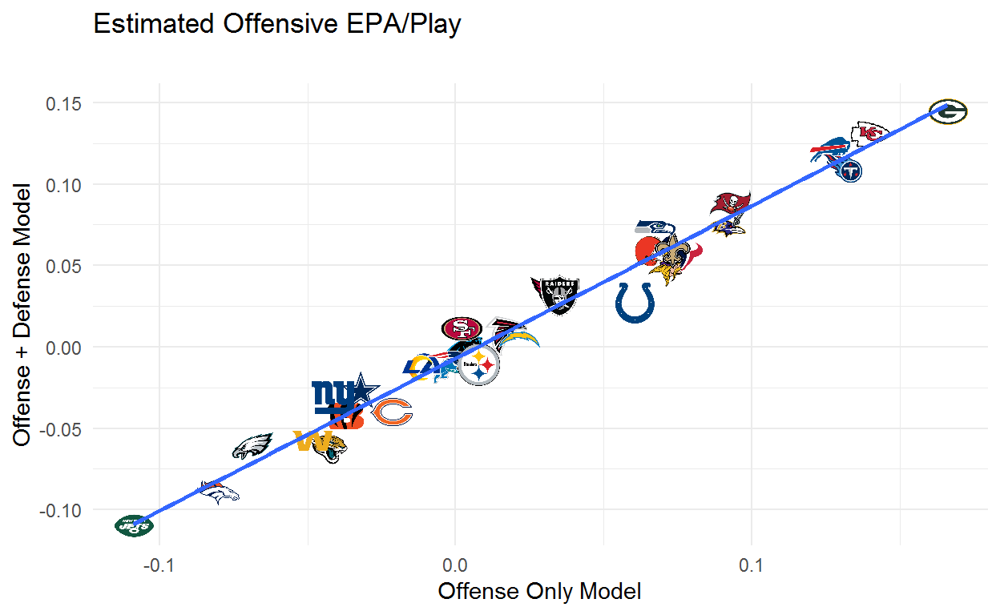
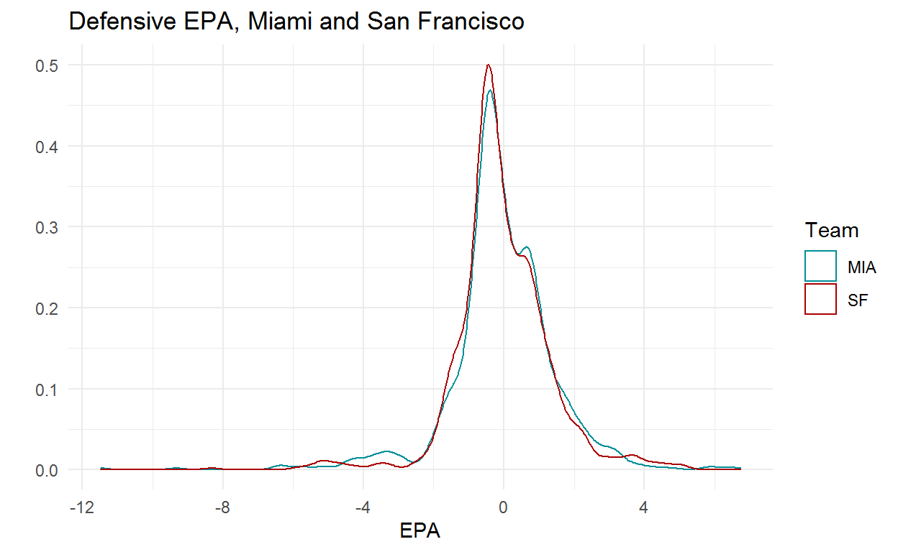
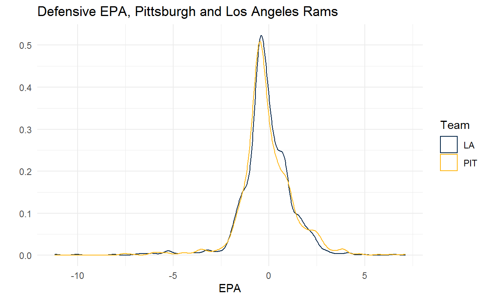

With 9:30 left in the third quarter of the fourth week of the 2019 season the Kansas city Chiefs had allowed .102 Expected Points Added (EPA) per play on defense for the season. Had they finished the season at .102 EPA/Play they would have been 30th in the NFL. On the next play, first and goal from the KC 1 yard line, the Chiefs returned a fumble 99 yards for a touchdown which was worth -13.6 EPA. 22 seconds after being at .102 the Chiefs were at .042 EPA/Play which would have been 22nd best at the end of the season.
Follow NFL analytics Twitter for any amount of time and you’ll see EPA/Play used to evaluate NFL teams. The example above shows how doing so in limited samples can be dangerous. EPA is noisy and quality of competition differs sharply across teams. Given these complications we need to go beyond raw EPA/Play estimates. The fundamental questions we want to answer are what we should believe about a team given the information we have and how uncertain we should be about that belief and we are going to use models to answer those questions.
We can do better than the status quo using some fairly simple multilevel models that build in information that we know should affect our inferences, adjust for competition, measure the play-to-play uncertainty in EPA, and apply some regularization to our estimates of team ability using what we’ve observed from other teams. Using multilevel models to estimate team ability is becoming more common and the goal of this post is to show how you can build your own model of EPA that will return regularized, opponent-adjusted measures of offensive and defensive EPA/play for each team.
Data
You can see how the data was set up as well as the calculation of the Chiefs pre-and-post-interception EPA below.
library(rstan)
library(lme4)
library(tidyverse)
library(DT)
library(tidybayes)
library(ggrepel)
library(magick)
library(resample)
set.seed(1234)
seasons <- 2018:2020
dat <- purrr::map_df(seasons, function(x) {
readRDS(
url(
glue::glue("https://raw.githubusercontent.com/guga31bb/nflfastR-data/master/data/play_by_play_{x}.rds")
)
)
})
post16 <- filter(dat,
season_type == 'REG' &
!is.na(epa) &
play_type %in% c('pass','run') &
down %in% c(1,2,3,4)
) %>%
dplyr::select(season, week, posteam, defteam, epa, play_id, qtr, quarter_seconds_remaining) %>%
mutate(def_id = as.numeric(factor(str_c(defteam, '-', season))),
off_id = as.numeric(factor(str_c(posteam, '-', season))))
epa_off_actual <- post16 %>%
group_by(posteam, season, off_id) %>%
summarise(offensive_epa = mean(epa),
n_offense = n())
epa_def_actual <- post16 %>%
group_by(defteam, season, def_id) %>%
summarise(defensive_epa = mean(epa))
epa_actual <- epa_off_actual %>%
inner_join(epa_def_actual, by = c('posteam' = 'defteam','season','off_id' = 'def_id'))
chiefs_2019 <- filter(post16, week <= 4 & season == 2019 & (posteam == 'KC'|defteam == 'KC')) %>%
arrange(week, play_id) %>%
mutate(play_num = row_number(),
bp = ifelse(epa < -13, 1, 0))
big_play_id <- which(chiefs_2019$bp == 1)
pre <- chiefs_2019 %>%
filter(play_num < big_play_id,
defteam == 'KC') %>%
summarise(epa = mean(epa))
with <- chiefs_2019 %>%
filter(play_num <= big_play_id,
defteam == 'KC') %>%
summarise(epa = mean(epa))
rm(dat)
The Simplest Model
Let’s start by saying our goal is to get regularized estimates of offensive ability. The simplest multilevel model we could build is something like the equation below.
\(epa_{ij} \sim Normal(\alpha_{ij}, \sigma)\)
This says that the epa of play \(i\) when team \(j\) has possession is normally distributed with a mean of \(alpha_{ij}\) and standard deviation \(\sigma\). We can think of \(alpha_{ij}\) as our estimate of team ability and to build the model we will put some hierarchical priors on this estimate. We’ll assume that EPA is centered at 0 and that team abilities follow a normal distribution with a standard deviation of \(\sigma_{off}\). More formally,
\(\alpha_{ij} \sim Normal(0, \sigma_{off})\)
The model is going to include all offensive plays from 2018 through 2020. This excludes penalties and two point conversions.
We can estimate this model with the stan code below.
data{
int<lower = 0> N; //number of plays
int<lower = 1> I; //number of teams
int<lower = 0, upper = I> ii[N]; //indicator for offense
real<lower = -16, upper = 10> y[N]; //epa
}
parameters{
real<lower = 0> sigma_y; //error for normal distribution
real<lower = 0> sigma_off; //standard deviation of offensive ability
vector[I] alpha_off_raw;
}
transformed parameters{ //using non-centered paramaterization
vector[I] alpha_off = alpha_off_raw * sigma_off;
}
model{
//priors
alpha_off_raw ~ normal(0,1);
sigma_off ~ normal(.05,.03);
sigma_y ~ normal(1,.2);
//likelihood
y ~ normal(alpha_off[ii], sigma_y);
}Models in stan require that the user specify the data as a list with an entry corresponding to each argument in the data block. The stan_model function compiles the model and sampling executes the sampling for the model.
Below you can see what the model is doing. The blue points are our model estimate of team ability while the white points are the team’s actual EPA/Play. This model basically just pulls every team toward zero. The order of estimated team abilities is the same as the order of actual EPA/Play, though this doesn’t necessarily have to be the case given that sample sizes vary across teams.
One interesting part of these results is just how noisy the team estimate are. Even with a full season of data it’s very difficult to separate the bulk of teams. We are very confident that the Jets are bad and the Packers and Chiefs are good but we aren’t particularly confident in the order of any of these teams. We can become more confident in our estimates by building in additional information, but raw EPA/Play doesn’t tell us enough to confidently rank teams.
An important point to note is that the degree to which teams are being pulled back toward zero is determined by the model. If there were no value in pooling information across teams the model estimates would equal what we actually observed from teams. The fact that we see teams being pulled back toward zero suggests that there is value in assuming that we can learn about reasonable values for teams by observing what other teams have done. Regression to the mean is real!
alpha_off <- rstan::extract(fit_off, pars = c('alpha_off'))$alpha_off
offense <- colMeans(alpha_off)
offense_se <- sqrt(colVars(alpha_off))
epa_actual$offense_only_estimate <- offense
epa_actual$offense_only_se <- offense_se
epa_actual$offense_only_lower <- epa_actual$offense_only_estimate - epa_actual$offense_only_se
epa_actual$offense_only_upper <- epa_actual$offense_only_estimate + epa_actual$offense_only_se
filter(epa_actual, season == 2020) %>%
ggplot(aes(y = reorder(posteam, offense_only_estimate), x = offensive_epa)) +
geom_point(shape = 1) +
geom_point(aes(x = offense_only_estimate, y = posteam), colour = 'blue') +
geom_linerange(aes(xmin = offense_only_lower, xmax = offense_only_upper)) +
theme_minimal() +
geom_vline(xintercept = 0, lty = 2) +
labs(title = 'Estimated vs. Actual Offensive EPA/Play, 2020',
subtitle = 'Model Estimate in Blue, +/- 1 s.e.') +
ylab('Team') +
xlab('Offensive EPA')

At this point we could kick our heels up and enjoy a job well done knowing that we’ve applied some regularization and have estimates of offensive team ability that are going to provide a better projection than raw averages. However, we also want to know how good teams are at defense. While we could do exactly this same process for defensive plays, a better approach is to build both into one model. This will give us estimates of offensive and defensive team ability that are regularized and adjusted for quality of opponent.
Adding Defense
Building a model with offense and defense requires adding two additional parameters. We will use \(\alpha_{ik}\) to represent defensive ability and we will need to estimate \(\sigma_{def}\), the standard deviation in defensive ability. Our probability model is:
\(epa_{ijk} \sim Normal(\alpha_{ij} + \alpha_{ik}, \sigma)\)
\(\alpha_{ij} \sim Normal(0, \sigma_{off})\)
\(\alpha_{ik} \sim Normal(0, \sigma_{def})\)
The stan code for the model is below. You’ll notice that we added some entries in the data block as well as a block called generated quantities. These are going to be used to simulate data from our model parameters so we’ll come back to those shortly.
We didn’t discuss priors for the first model but it’s worth doing now. In the code below you can see all of the choices made for priors as well as some restrictions on the data. The only relevant restriction on the data is setting EPA to be bound between -16 and 10. The thought here was that turning a sure-thing safety into a touchdown would be worth, at most, 10 points. Likewise, turning a sure-thing touchdown into a touchdown for the defense would be worth, at most, -16 points. We don’t want to put non-zero probability on values that we know can’t exist in our data and restrictions on parameters are just one way to do this.
The thought process for the priors on \(\sigma_{off}\) and \(\sigma_{def}\) was that there is more variation in team offensive ability than team defensive ability which we know from looking at measures like Football Outsiders’ DVOA. The priors are set up such that it would be surprising but not impossible for us to find that there is actually less variance in offensive ability. The values themselves are based on the assumption that teams run around 60 offensive plays per game (in 2018 it was 62.2 and in 2019 it was 62.8). A standard deviation of .06 in offensive EPA/Play would mean that the standard deviation in offensive EPA/Game is about 3.7 points. This would mean that 95% of teams should be within about 7.3 EPA/Game. The .03 standard deviation on the prior means that we think it’s most likely that 95% of teams are within 7.3 EPA/Game in true talent but that 10.9 would perfectly reasonable and that 14.6 is an unlikely but plausible value.
We’ll leave it to the reader to determine whether or not these are reasonable priors but it turns out that changing these priors by small amounts doesn’t make a big difference. The real value of setting more informative priors is in eliminating unrealistic parameter values where the variation in abilities is enormous or the variation in one skill is several times larger than the other. Doing so helps the model sample much more efficiently at the small cost of not considering that teams vary by +- 20 EPA/Game.
data{
int<lower = 0> N; //number of plays
int<lower = 1> I; //number of teams
int<lower = 0, upper = I> ii[N]; //indicator for offense
int<lower = 0, upper = I> jj[N]; //indicator for defense
real<lower = -16, upper = 10> y[N]; //epa
int<lower = 1> N_rep; //number of samples for posterior density check
int<lower = 1, upper = I> ii_rep[N_rep];
int<lower = 1, upper = I> jj_rep[N_rep];
}
parameters{
real<lower = 0> sigma_y; //error for t distribution
real<lower = 0> sigma_off; //variance in offensive ability
real<lower = 0> sigma_def; //variance in defensive ability
vector[I] alpha_off_raw;
vector[I] alpha_def_raw;
}
transformed parameters{ //using non-centered paramaterization
vector[I] alpha_off = alpha_off_raw * sigma_off;
vector[I] alpha_def = alpha_def_raw * sigma_def;
}
model{
//priors
alpha_off_raw ~ normal(0,1);
alpha_def_raw ~ normal(0,1);
sigma_off ~ normal(.06,.03);
sigma_def ~ normal(.03,.03);
sigma_y ~ normal(1,.2);
//likelihood
y ~ normal(alpha_off[ii] + alpha_def[jj], sigma_y);
}
generated quantities{
vector[N_rep] y_rep;
for (n in 1:N_rep){
y_rep[n] = normal_rng(alpha_off[ii_rep[n]] + alpha_def[jj_rep[n]], sigma_y);
}
}We build the model in exactly the same way but add an indicator for the defense.
stanmod_normal <- stan_model('stan-models/epa-per-play-normal.stan')
standat_normal <- list(N = nrow(post16),
I = length(unique(post16$off_id)),
ii = post16$off_id,
jj = post16$def_id,
y = post16$epa,
N_rep = nrow(filter(post16, season == 2020)),
ii_rep = filter(post16, season == 2020)$off_id,
jj_rep = filter(post16, season == 2020)$def_id
)
fit_normal <- sampling(stanmod_normal, data = standat_normal, cores = 4, chains = 4, iter = 2000)
Before jumping into team estimates we can look at our variance parameters. The model shows that there is likely more spread in offensive ability than defensive ability, though the two are fairly close.
Inference for Stan model: epa-per-play-normal.
4 chains, each with iter=2000; warmup=1000; thin=1;
post-warmup draws per chain=1000, total post-warmup draws=4000.
mean se_mean sd 2.5% 25% 50% 75% 97.5% n_eff Rhat
sigma_off 0.08 0 0.01 0.07 0.07 0.08 0.08 0.09 1752 1
sigma_def 0.06 0 0.01 0.05 0.06 0.06 0.07 0.08 2034 1
sigma_y 1.39 0 0.00 1.39 1.39 1.39 1.40 1.40 4297 1
Samples were drawn using NUTS(diag_e) at Tue Jul 06 21:11:02 2021.
For each parameter, n_eff is a crude measure of effective sample size,
and Rhat is the potential scale reduction factor on split chains (at
convergence, Rhat=1).The plot below shows that this model is doing more than just pulling teams toward the middle which is good because it’s supposed to be doing more!

We can do the same thing for defense, keeping in mind that negative is good for defense. The Rams look like the clear best defense with Detroit and Houston bringing up the rear.

The next plot shows how team offensive estimates compare across the two models. Teams above the line are helped by opponent adjustments and teams below the line are hurt by opponent adjustments. The first thing to note is that these differences aren’t huge. While we want to adjust for opponent, doing so doesn’t completely change our understanding of who is and isn’t good. The team whose estimate improves the most is the Giants which makes sense given that they faced numbers 1, 2, 4(2x), 5, 6, 8, 10, 14(2x), 15, 20, 24(2x), 26, and 27 in the model’s estimated defensive ability. The team whose estimate drops the most is the Colts which also makes sense as they share a division with the 31st, 30th, and 28th ranked defenses and also got to face the 32nd, 29th, 27th, 26th, and 25th ranked defenses. Still, the vast majority of teams change very little which is consistent with findings that adding adjustments for defenses faced doesn’t do much to help predict out of sample.
epa_actual %>%
dplyr::left_join(
nflfastR::teams_colors_logos %>% dplyr::select(team_abbr, team_logo_espn),
by = c("posteam" = "team_abbr")
) %>%
dplyr::mutate(
grob = purrr::map(seq_along(team_logo_espn), function(x) {
grid::rasterGrob(magick::image_read(team_logo_espn[[x]]))
})
) %>%
filter(season == 2020) %>%
ggplot(aes(x = offense_only_estimate, y = offense_normal_estimate)) +
ggpmisc::geom_grob(aes(x = offense_only_estimate, y = offense_normal_estimate, label = grob), vp.width = 0.05) +
theme_minimal() +
geom_smooth(method = 'lm', se = F) +
xlab('Offense Only Model') +
ylab('Offense + Defense Model') +
labs(title = 'Estimated Offensive EPA/Play',
subtitle = '')

One way to evaluate the fit of our model is to ask if the model could plausibly have generated the data that we observe. Above we discussed the generated quantities block of the stan model. In this block we can generate simulated data from our model’s estimated parameters. If these simulated data sets look somewhat like what actually happened that’s a good start to build confidence in our model. We set up our stan data to simulate every play of the 2020 season and we are hoping that the dark line (the actual EPA values) is consistent with the light blue lines (the EPA values simulated from our model).
yrep <- rstan::extract(fit_normal, pars = 'y_rep')$y_rep[1:100,]
bayesplot::ppc_dens_overlay(post16$epa[post16$season == 2020], yrep) +
labs(title = 'Posterior Predictive Check') +
xlim(-16, 10)

Yikes! Our model is predicting too few plays near zero, too many in the -4 to -2 and 2 to 4 ranges, and too few on the tails. EPA is weirdly distributed. As we mentioned in the introduction there are a handful of extremely high leverage plays and clearly there are a lot of plays near zero. It also looks like there’s a second mode which is probably due to this being a mixture of distributions with EPA on runs, EPA on incomplete passes, and EPA on completed passes each having their own district shape.
Using the Student’s T
Ultimately there isn’t a “right” choice of distribution that will neatly produce what we see in the dark line above. What we’re seeing is probably a mixture of distributions with EPA on runs, EPA on completed passes, and EPA on incompletions all having their own distributions. Still, there are things we can do that are going to fit the data better while being easy to implement. The Student’s t distribution has more density near the mean and at the tails than the normal distribution which looks like what our model needs. Our new model is going to be:
\(epa_{ijk} \sim StudentT(\nu, \alpha_{ij} + \alpha_{ik}, \sigma)\)
\(\nu = 6\)
Our new parameter, \(\nu\), is the degrees of freedom parameter which controls how fat the tails will be with lower values corresponding to more extreme values with more density on the mean. We set this to 6 which is small enough to allow for the kinds of values that we actually see in our data without putting significant density on values way above or below what we would expect to find.
The stan code to fit the model is basically the same as above but we add an entry to the data block for degrees of freedom and and change the likelihood from normal to student_t.
data{
int<lower = 0> N; //number of plays
int<lower = 1> I; //number of teams
int<lower = 0, upper = I> ii[N]; //indicator for offense
int<lower = 0, upper = I> jj[N]; //indicator for defense
int df; //degrees of freedom for t distribution
real<lower = -16, upper = 10> y[N]; //epa
int<lower = 1> N_rep; //number of samples for posterior density check
int<lower = 1, upper = I> ii_rep[N_rep];
int<lower = 1, upper = I> jj_rep[N_rep];
}
parameters{
real<lower = 0> sigma_y; //error for t distribution
real<lower = 0> sigma_off; //variance in offensive ability
real<lower = 0> sigma_def; //variance in defensive ability
vector[I] alpha_off_raw;
vector[I] alpha_def_raw;
}
transformed parameters{ //using non-centered paramaterization
vector[I] alpha_off = alpha_off_raw * sigma_off;
vector[I] alpha_def = alpha_def_raw * sigma_def;
}
model{
//priors
alpha_off_raw ~ normal(0,1);
alpha_def_raw ~ normal(0,1);
sigma_off ~ normal(.06,.03);
sigma_def ~ normal(.03,.03);
sigma_y ~ normal(1,.2);
//likelihood
y ~ student_t(df,alpha_off[ii] + alpha_def[jj], sigma_y);
}
generated quantities{
vector[N_rep] y_rep;
for (n in 1:N_rep){
y_rep[n] = student_t_rng(df, alpha_off[ii_rep[n]] + alpha_def[jj_rep[n]], sigma_y);
}
}The only difference in the code to fit the model is that we add a df object to our data.
stanmod_t <- stan_model('stan-models/epa-per-play.stan')
standat_t <- list(N = nrow(post16),
I = length(unique(post16$off_id)),
ii = post16$off_id,
jj = post16$def_id,
df = 6,
y = post16$epa,
N_rep = nrow(filter(post16, season == 2020)),
ii_rep = filter(post16, season == 2020)$off_id,
jj_rep = filter(post16, season == 2020)$def_id
)
fit_t <- sampling(stanmod_t, data = standat_t, cores = 4, chains = 4, iter = 2000)
Our estimates of the variance in team abilities are both slightly lower but very similar to what we saw in the normal model. They \(\sigma_{y}\) parameter is much smaller but being a different distribution it’s not a 1 to 1 comparison with the same parameter in the normal model.
Inference for Stan model: epa-per-play.
4 chains, each with iter=2000; warmup=1000; thin=1;
post-warmup draws per chain=1000, total post-warmup draws=4000.
mean se_mean sd 2.5% 25% 50% 75% 97.5% n_eff Rhat
sigma_off 0.07 0 0.01 0.06 0.07 0.07 0.08 0.08 1313 1
sigma_def 0.05 0 0.01 0.04 0.05 0.05 0.06 0.07 1525 1
sigma_y 1.02 0 0.00 1.02 1.02 1.02 1.03 1.03 5877 1
Samples were drawn using NUTS(diag_e) at Tue Jul 06 22:17:55 2021.
For each parameter, n_eff is a crude measure of effective sample size,
and Rhat is the potential scale reduction factor on split chains (at
convergence, Rhat=1).So is this a better model? Our posterior predictive check certainly looks better. We’re capturing a lot more of the density in the center of the distribution and doing a better job with the tails. It’s still not good but this model is clearly a more plausible candidate to have generated our data than the normal model.

Here you can see the offensive team ability estimates and now we have some interesting things happening! Buffalo and Kansas City both jump over Green Bay despite Green Bay having a much higher EPA/Play.

Detroit remains the worst defense but Pittsburgh passes the Rams to become the best defense in the league.

Below we can see how estimates compare across the normal and Student’s t models. Generally speaking the estimates are lower, but more importantly we see some big differences in our team estimates. The Bills, Vikings, Patriots, Rams, and Cowboys look a good deal better while the Packers, Steelers, and Chargers look worse.
epa_actual %>%
dplyr::left_join(
nflfastR::teams_colors_logos %>% dplyr::select(team_abbr, team_logo_espn),
by = c("posteam" = "team_abbr")
) %>%
dplyr::mutate(
grob = purrr::map(seq_along(team_logo_espn), function(x) {
grid::rasterGrob(magick::image_read(team_logo_espn[[x]]))
})
) %>%
filter(season == 2020) %>%
ggplot(aes(x = offense_normal_estimate, y = offense_t_estimate)) +
ggpmisc::geom_grob(aes(x = offense_normal_estimate, y = offense_t_estimate, label = grob), vp.width = 0.05) +
theme_minimal() +
geom_smooth(method = 'lm', se = F) +
xlab('Normal Model') +
ylab("Student's t Model") +
labs(title = 'Estimated Offensive EPA/Play',
subtitle = '')

The same plot for defense shows some big moves. The Steelers, 49ers, Bears, and Eagles improve while the Colts, Dolphins, Bills, and Patriots drop.

The obvious question is why certain teams are moving so much. What makes Miami so much worse and Pittsburgh so much better when using the Student’s t? The Student’s t puts more density on extreme values which makes our mean estimates more robust to outliers. This results in teams that get to a good EPA/Play by racking up a few huge plays looking worse than if we use the normal. Likewise, teams whose EPA/Play are dragged down by a few big plays are going to look better. Going back to the example at the start of the paper, this approach would give the Chiefs a lot less credit for that big play than if we use the normal distribution.
Another way to look at how this model is arriving at its team strength estimates is to compare Miami and San Francisco who are very close in the normal model and diverge sharply with the Student’s t. The plot below shows the density of defensive EPA for each team. Miami has a good number of plays on the far left of the distribution, which makes sense given all of the pick 6’s they had in the early to middle part of the season, but San Francisco has had better results on plays near the center of the distribution.
filter(post16, season == 2020 & defteam %in% c('MIA','SF')) %>%
ggplot(aes(x = epa, colour = defteam)) +
scale_colour_manual(values = c('#008e97','#aa0000')) +
geom_density() +
theme_minimal() +
xlab("EPA") +
ylab("") +
labs(title = "Defensive EPA, Miami and San Francisco",
colour = 'Team')

Pittsburgh and the Rams tell a similar story. Pittsburgh allowed more big plays than the Rams and the Rams forced some very high leverage turnovers but Pittsburgh was better near the center of the distribution.

We can do the same for New England and the Steelers on offense. New England has performed better on plays near the bulk of the distribution while having more disastrous plays and fewer big positive plays which I would guess lines up with the experience of most Pats fans.

Conclusions
The goal of this post was to introduce how you can use publicly available information to build a model that estimates team abilities while incorporating information about quality of competition. In so doing we found that EPA/Play is an extremely noisy measure that requires a good deal of regularization. Big plays and differences in competition can greatly affect how we view teams so we need to make sure that these are accounted for. This has important implications for what kinds of conclusions we can draw from splits in the data. You can look at EPA/Play against tight ends or EPA/Play weeks 1-3 vs. weeks 4-6 but you should probably shouldn’t read too much into them. When you’re looking at EPA you need to bet heavily on regression to the mean.
All that said, this model needs a lot of work! This was a very simple model and there are all kinds of extensions that you could build into this framework to make the model better. You might want to build in information about the quarterback for a given play to account for situations like the Cowboys where you have a very good quarterback for 4.5 games and some less good quarterbacks for the remaining games (just make sure you have a model to estimate QB ability with the appropriate amount of uncertainty!). You could model team abilities as coming from a different distribution. You could build in an autoregressive structure to allow team ability to vary over time or to take advantage of the fact that we can probably learn something about the 2020 Chiefs from the 2019 Chiefs. You could include information about win probability or coaching staffs or weather or betting lines or whatever you can imagine to take advantage of all of the information that you think is important. This post provides a framework and hopefully the community will find it useful and can build from it.
Appendix: Team Estimates
epa_actual %>%
dplyr::select(posteam, season, offense_normal_estimate, offense_t_estimate, defense_normal_estimate, defense_t_estimate) %>%
mutate_if(is.numeric, round, 2) %>%
arrange(desc(offense_t_estimate)) %>%
rename('Team' = posteam,
'Season' = season,
'Offense, Normal' = offense_normal_estimate,
'Offense, T' = offense_t_estimate,
'Defense, Normal' = defense_normal_estimate,
'Defense, T' = defense_t_estimate) %>%
datatable(filter = 'top')